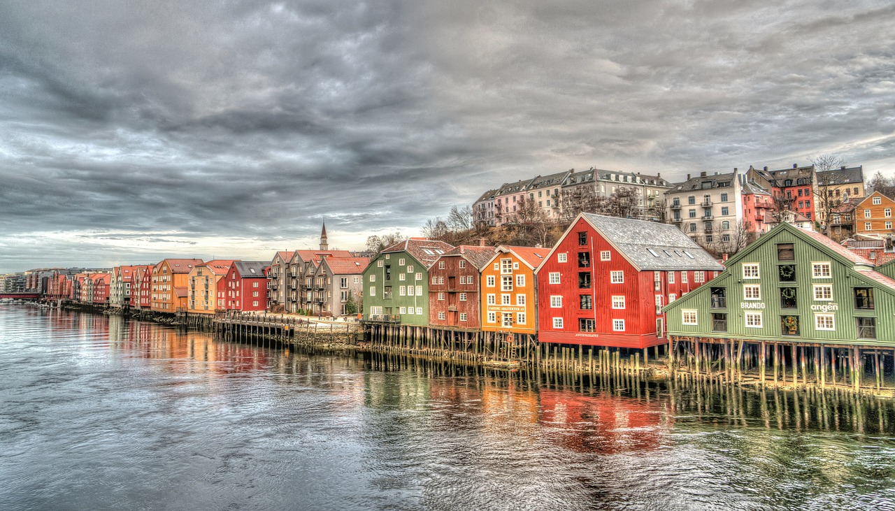
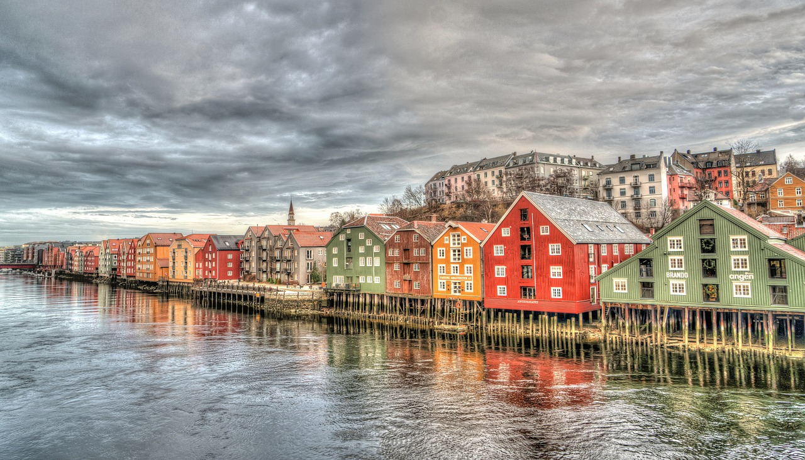
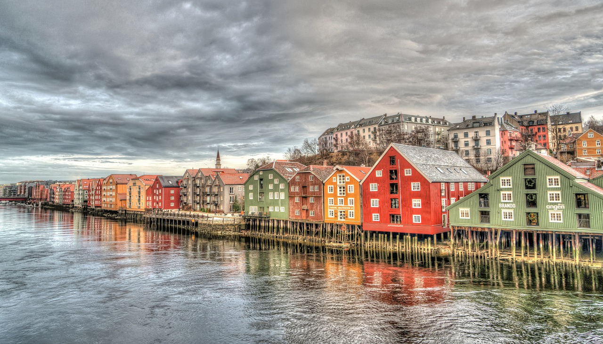
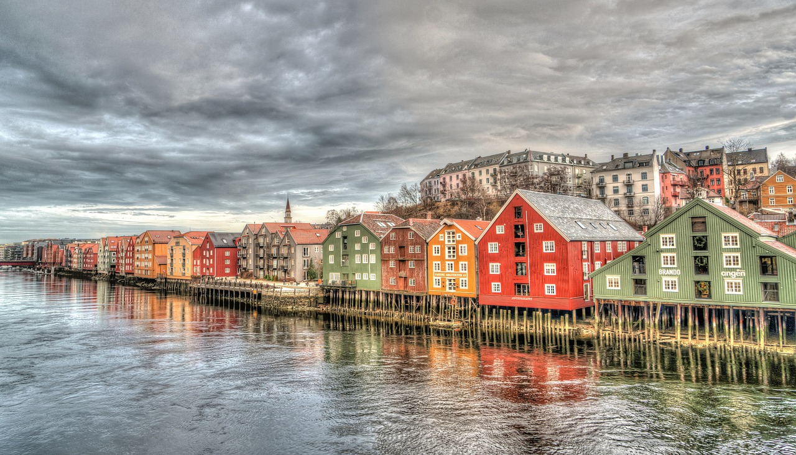

 

La Norvège est un pays scandinave comprenant montagnes, glaciers et fjords côtiers profonds. Oslo, la capitale, regorge d'espaces verts et de musées. Des navires vikings du IXe siècle sont exposés au musée des navires vikings d'Oslo. Avec ses maisons colorées en bois, Bergen est le point de départ des croisières pour le spectaculaire Sognefjord. La Norvège est également réputée pour la pêche, la randonnée et le ski, notamment à la station olympique de Lillehammer.

Mars, 12, 2022
Cap sur le Sud de la Norvège, théâtre d'une nature grandiose, à travers les hauts plateaux montagneux, les fjords profonds et les glaciers. Les étapes de notre voyage seront entrecoupées de superbes randonnées nature à la découverte des régions du Hardanger. Lacs, cascades, forêts, reliefs tapissés d'une flore arctique décrivent le décor du pays des géants. Ici, les reliefs coiffés de neiges éternelles s'élancent vers le ciel jusqu'à 2 500 m d'altitude. Un voyage complet au cœur des paysages majestueux du Sud de la Norvège entre montagnes et fjords
unknown
Mars, 12, 2022
Le ski de randonnée nocturne est devenu très populaire en Norvège ces dernières années, ce qui en fait l'une des activités les plus convoitées de la région ! Une excursion insolite qui commence au bureau d'Uteguiden à Stranda puis vous partez en voiture jusqu'au point de départ, où vous commencerez à grimper vers le sommet éclairé uniquement par la lumière de votre lampe frontale et les étoiles. Et si les conditions météorologiques sont bonnes, il y a de fortes chances que vous puissiez admirer les aurores boréales. Le genre d'expérience que nous n'avons pas tous les jours.
unknown

Mars, 12s, 2022
À l'échelle norvégienne, c’est une grande ville. Pourtant, la marque de fabrique de Bergen, c’est son atmosphère provinciale pleine de charme. Laissez-vous donc séduire par cette ambiance si particulière et baladez-vous dans le célèbre quartier de Bryggen (les quais). L'air marin s’y mêle aux arômes de cuisine des restaurants, dont certains, situés en bord de mer, figurent parmi les meilleurs du pays.
unknown